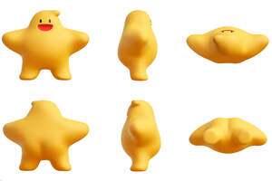

Trade Mark Journal No.2025/046 14 November 2025
UK00004285727 29 October 2025 (9,16,18,25,35,42)

3 Dimensional
- Class 9
- Computer programs, recorded; computer operating programs, recorded; computer software, recorded; computer programs, downloadable; computer game software, recorded; computer software applications, downloadable; computer software platforms, recorded or downloadable; computer game software, downloadable; Downloadable computer and application software for use as a digital wallet; data sets, recorded or downloadable; Global Positioning System [GPS] apparatus; Downloadable cryptographic keys for receiving and spending crypto assets; downloadable computer software for managing cryptocurrency transactions using blockchain technology; data processing apparatus; computer memory devices; computers; downloadable inventory management software; Computer software and hardware for automated express pick-up systems; central processing units [processors].
- Class 16
- Office requisites, except furniture; paper; towels of paper; pamphlets; writing or drawing books; cards; envelopes [stationery]; postcards; printed matter; handbooks [manuals]; booklets; calendars; stickers [stationery]; posters; newspapers; books; magazines [periodicals]; pictures; packing paper; bookbinding material; stationery; school supplies [stationery]; writing materials; pens [office requisites]; paintbrushes; writing instruments; clipboards; name badges [office requisites].
- Class 18
- Bags; backpacks; pocket wallets; handbags; briefcases; suitcases; net bags for shopping; business card cases; baggage tags; umbrellas; card cases [notecases]; conference folders.
- Class 25
- Clothing; shirts; trousers; coats; skirts; sports jerseys; uniforms; tee-shirts; shoes; headwear; hosiery; socks; gloves [clothing]; scarfs; hats.
- Class 35
- Presentation of goods on communication media, for retail purposes relating to computers, computer software, computer hardware, non-medicated cosmetics and toiletry preparations, non-medicated dentifrices, perfumery, essential oils, bleaching preparations and other substances for laundry use, cleaning, polishing, scouring and abrasive preparations, medical and veterinary preparations, dietary supplements for human beings, small items of metal hardware, power-operated tools, agricultural implements, Hand tools and implements, hand-operated, cutlery, Scientific, research, navigation, surveying, photographic, cinematographic, audiovisual, optical, weighing, measuring, signaling, detecting, testing, inspecting, life-saving and teaching apparatus and instruments, apparatus and instruments for conducting, switching, transforming, accumulating, regulating or controlling the distribution or use of electricity, apparatus and instruments for recording, transmitting, reproducing or processing sound, images or data, recorded and downloadable media, computer software, blank digital or analogue recording and storage media, mechanisms for coin-operated apparatus, cash registers, calculating devices, computers and computer peripheral devices, diving suits, divers' masks, ear plugs for divers, nose clips for divers and swimmers, gloves for divers, breathing apparatus for underwater swimming, fire-extinguishing apparatus, surgical, medical, dental and veterinary apparatus and instruments, Apparatus and installations for lighting, heating, cooling, steam generating, cooking, drying, ventilating, water supply and sanitary purposes, Precious metals and their alloys, jewellery, precious and semi-precious stones, horological and chronometric instruments, Musical instruments, music stands and stands for musical instruments, Paper and cardboard, printed matter, bookbinding material, photographs, stationery and office requisites, except furniture, adhesives for stationery or household purposes, drawing materials and materials for artists, paintbrushes, instructional and teaching materials, plastic sheets, films and bags for wrapping and packaging, printers' type, printing blocks, Leather and imitations of leather, animal skins and hides, luggage and carrying bags, umbrellas and parasols, walking sticks, whips, harness and saddlery, collars, leashes and clothing for animals, building materials, Furniture, mirrors, picture frames, containers, not of metal, for storage or transport, unworked or semi-worked bone, horn, whalebone or mother-of-pearl, shells, meerschaum, yellow amber, cookware and tableware, combs and sponges, brushes, brush-making materials, articles for cleaning purposes, unworked or semi-worked glass, except building glass, glassware, porcelain and earthenware, Yarns and threads for textile use, Textiles and substitutes for textiles, household linen, curtains of textile or plastic, clothing, footwear, headgear, Lace, braid and embroidery, and haberdashery ribbons and bows, buttons, hooks and eyes, pins and needles, artificial flowers, hair decorations, false hair, Carpets, rugs, mats and matting, linoleum and other materials for covering existing floors, wall hangings, not of textile, toys, games and playthings, foodstuffs, alcoholic drinks, non-alcoholic drinks; providing commercial information and advice for consumers in the choice of products and services; provision of an online marketplace for buyers and sellers of goods and services; sales promotion for others; market studies; business research; consumer profiling for commercial or marketing purposes; lead generation services; sales prospecting for others; business management assistance; business management consultancy; providing business information; providing commercial and business contact information; compilation of information into computer databases; procurement services for others [purchasing goods and services for other businesses]; advertising; providing user ratings for commercial or advertising purposes; search engine optimisation for sales promotion; commercial information agency services; commercial or industrial management assistance; sponsorship search; Presentation and demonstration of a variety of goods for the benefit of others (excluding services conducted in retail or wholesale services); organization of exhibitions for commercial or advertising purposes; organization of trade fairs; commercial administration of the licensing of the goods and services of others; updating and maintenance of data in computer databases; web indexing for commercial or advertising purposes; organization, operation and supervision of loyalty and incentive schemes; sales, business and promotional information services; ordering services (for others); customer relationship management.
- Class 42
- Software as a service [SaaS]; platform as a service [PaaS]; providing information relating to computer technology and programming via a website; creating and designing website-based indexes of information for others [information technology services]; user authentication services using technology for e-commerce transactions; data encryption services; internet security consultancy; technological research; research in the field of artificial intelligence technology; development of computer platforms; computer programming services for data processing; information technology [IT] support services [troubleshooting of software]; design and development of computer software for logistics, supply chain management and e-business portals; electronic data storage; designing, creating, or maintaining computer programs; providing online application software (SAAS); Electronic monitoring of identification information; electronic monitoring to detect unauthorized use of credit cards via the Internet; installation of computer software; creating and maintaining websites for others; software engineering services for data processing; providing online non-downloadable computer software.
Alibaba Singapore Holding Private Limited
Representative: Sonder & Clay